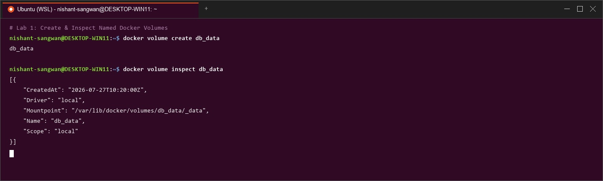
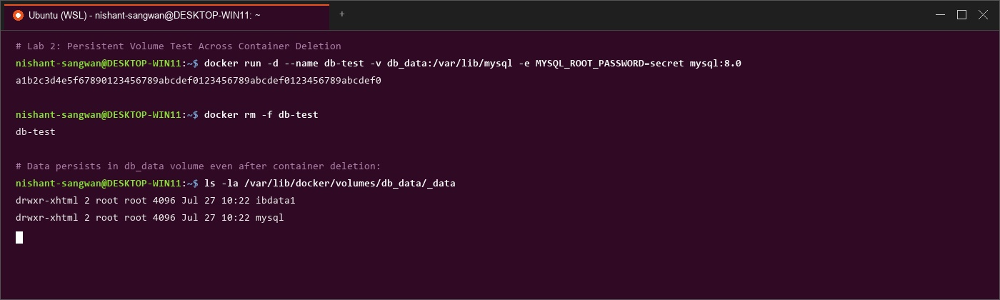
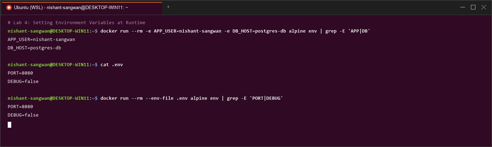
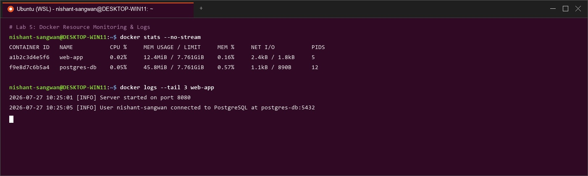
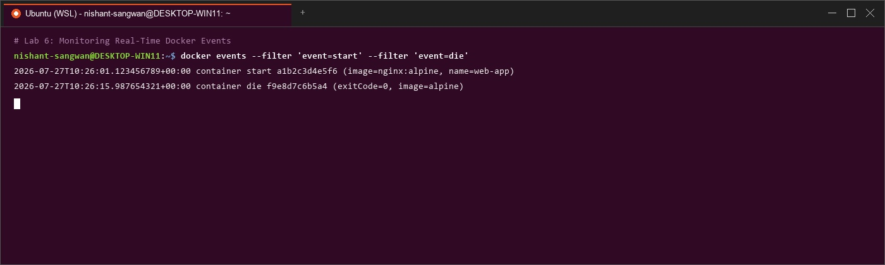
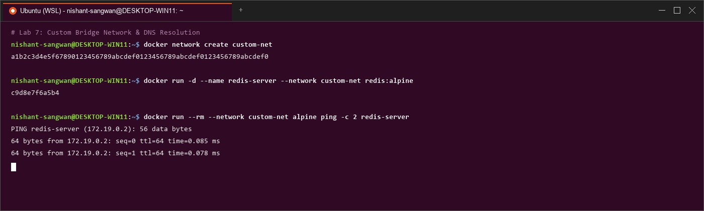
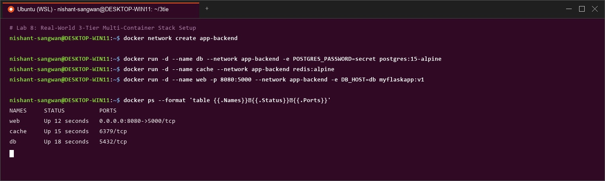

Docker: Volumes, Env Vars, Monitoring & Networks
Part 1: The Ephemeral Data Problem & Docker Volumes
Container data is lost when containers are removed. Docker Volumes solve this by storing data outside the container's writable layer.

Volume Types
| Type | Syntax | Use Case |
|---|---|---|
| Anonymous | -v /app/data | Temporary, auto-named |
| Named | -v mydata:/app/data | Production databases, persistent state |
| Bind Mount | -v ~/host:/container | Dev workflows, config files |
️ Practical Volume Examples
MySQL with named volume survives container destruction. NGINX with bind-mounted config files for live editing.

Volume Management Commands
| Command | Purpose |
|---|---|
docker volume ls | List all volumes |
docker volume create <name> | Create named volume |
docker volume inspect <name> | Show details |
docker volume prune | Remove unused volumes |
docker volume rm <name> | Remove specific volume |
Part 2: Environment Variables
Three Methods
| Method | Syntax | Best For |
|---|---|---|
-e flag | docker run -e VAR=value | Quick overrides, CI/CD |
--env-file | docker run --env-file .env | Multiple vars, secrets |
Dockerfile ENV | ENV PORT=3000 | Defaults, build-time config |
Environment Variables in Applications
Flask app reading DATABASE_HOST, DEBUG, and API_KEY from environment at runtime via os.environ.get().

-e, --env-file, and testing via curl /configPart 3: Docker Monitoring
Real-time CPU, memory, network I/O metrics with docker stats. Process inspection with docker top. Log streaming with docker logs -f.

docker stats, docker top, docker logs, and docker inspectEvents & Monitoring Dashboard
Real-time Docker engine events and a custom monitoring dashboard script showing containers, resource usage, events, and system disk usage.

docker events and custom monitoring dashboard with docker system dfPart 4: Docker Networks
| Network Type | Driver | Use Case |
|---|---|---|
| Bridge (default) | bridge | Container-to-container on same host |
| Host | host | No isolation, shares host network stack |
| None | null | Complete network isolation |
| Overlay | overlay | Multi-host Swarm networking |

Multi-Container Application
Web App + PostgreSQL connected via custom network. Containers communicate using hostnames (postgres-db) instead of IP addresses.
️ Part 5: Complete Real-World Example
3-tier stack: Flask (port 5000) + PostgreSQL (port 5432) + Redis (port 6379), all on myapp-network with named volumes and environment variables.

Quick Reference Cheatsheet
| Category | Command | Purpose |
|---|---|---|
| Volumes | docker volume create <name> | Create named volume |
docker run -v vol:/path | Mount named volume | |
docker run -v /host:/ctr | Bind mount | |
| Env Vars | docker run -e VAR=val | Set variable |
docker run --env-file .env | Load from file | |
| Monitoring | docker stats | Live metrics |
docker logs -f <ctr> | Follow logs | |
docker events | Real-time events | |
| Networks | docker network create <name> | Create network |
docker run --network <name> | Join network | |
docker network inspect <net> | Network details |